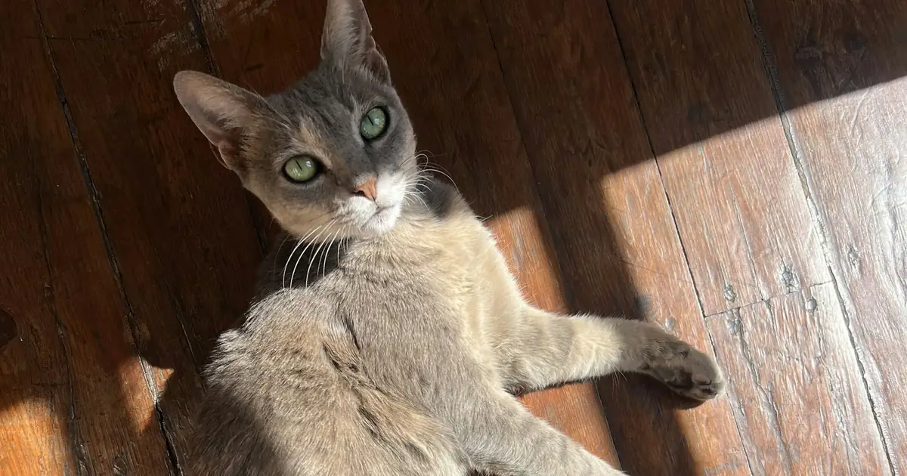

If your cat ate grapes, raisins, currants, sultanas, or foods that contain them (trail mix, bread, cookies, granola), call your veterinarian or an animal poison control center now, even if your cat seems fine. Any amount is treated as an emergency. The cat grape and raisin calculator gives a dose estimate you can share with your vet.

Enter weight and amount to get an urgency level and next steps.
What to do right now
- Move your cat away and pick up any remaining fruit or food.
- Count or estimate how many grapes or raisins are missing, and note the time and your cat's weight.
- Call your veterinarian or an animal poison control center now.
- Do not try to make your cat vomit at home. Hydrogen peroxide and salt are not safe for cats.
- Watch for vomiting, loss of appetite, and lethargy, and keep the packaging if it was a baked good or mix.
Are grapes toxic to cats? What the evidence says
The honest answer is that the risk in cats is real but poorly understood. Here is what has been published:
| Source | What it found |
|---|---|
| Merck Veterinary Manual | Anecdotal reports exist of kidney failure in cats and ferrets, but there are no published case reports. |
| UK Veterinary Poisons Information Service | Two cats with acute kidney failure after eating grapes or raisins (summarized in the 2022 Dutch study). |
| Dutch poison center study, 2022 | 13 cats: 2 developed clinical signs, none developed acute kidney injury. The authors wrote that whether cats develop kidney injury is still not clear. |
| ASPCA | Sources disagree: one article says cats may also be affected, a blog post says grapes and raisins are toxic to dogs but not to cats. |
One proposed cause of kidney injury in dogs is tartaric acid, which dogs excrete poorly (Merck Veterinary Manual). Merck notes that other species have transporters dogs lack; how this applies to cats is not known. Because no toxic dose has been set for cats, and some dogs have reacted to very small amounts, there is no known safe amount. The calculator treats any amount as an emergency and never shows a safe result.
Symptoms to watch for
- Vomiting, sometimes with pieces of fruit
- Not eating
- Lethargy or hiding
- Drinking and urinating more, or much less
- Weakness or dehydration
In dogs, kidney injury usually shows up within 24 to 72 hours. Watch your cat for at least 3 days and call your vet right away if any sign appears.
Go straight to an emergency vet if
- Your cat is vomiting repeatedly, will not eat, or is very lethargic
- Your cat is urinating much less or not at all
- Your cat has kidney disease
- Your vet or poison control tells you to bring your cat in
What the vet will do
If the ingestion was recent, the vet may give a medicine that makes cats vomit, and may give activated charcoal. Depending on the amount and your cat's health, the vet may recommend IV fluids and blood tests to check kidney values over the next 2 to 3 days. Early treatment is simple; treating kidney failure is not.
How to prevent it
- Keep grapes, raisins, and foods made with them in closed containers or cabinets.
- Watch for raisins in bread, cookies, granola, trail mix, and holiday baking.
- Clean up dropped fruit right away, especially in homes with both cats and dogs.
Related: My dog ate grapes or raisins, Cat lily poisoning, and the pet poison-proofing checklist.
Enter weight and amount to get an urgency level and next steps.
Frequently asked questions
Are grapes and raisins toxic to cats?
Possibly. Grape and raisin kidney injury is well documented in dogs. In cats the evidence is limited: Merck Veterinary Manual mentions anecdotal reports of kidney failure in cats with no published case reports, the UK Veterinary Poisons Information Service has described two cats with acute kidney failure, and ASPCA sources disagree (one article says cats may also be affected, a blog post says grapes are toxic to dogs but not to cats). Because the risk cannot be ruled out, treat any ingestion seriously and call a vet or poison control.
How many grapes can a cat eat safely?
There is no known safe amount for cats. No toxic dose has been established, and in dogs some individuals have reacted to very small amounts. This calculator treats any amount as an emergency.
My cat ate one grape. What should I do?
Treat it as an emergency. Call your vet or ASPCA Animal Poison Control at (888) 426-4435 now. There is no established safe or toxic dose for cats, so even one grape or raisin cannot be called safe. Your vet may advise inducing vomiting at the clinic or monitoring kidney values.
What are the symptoms of grape poisoning in cats?
In the 2022 Dutch poison center study, signs reported in dogs and cats included vomiting, lethargy, diarrhea, and loss of appetite. In dogs, the main danger is acute kidney injury, which can show up as vomiting, reduced appetite, weakness, and drinking or urinating more or much less, usually within 24 to 72 hours.
Why do so few cats get grape poisoning?
Most cats are not interested in grapes or raisins, so exposures are rare and there is little data. A rare exposure is not proof of safety. The Dutch study found most cats had no signs, but 2 of 13 did, and the UK cases involved kidney failure.